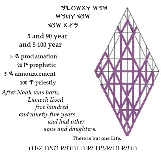

Noah Increases
The discords j within humanity m had become destructive c and w cruel t. Violence c was everywhere o, and the poor y were deprived m of the dignity c of hope n in their daily lives h. Justice w had become synonymous with favor j, and the disadvantaged m suffered c the indignity m of being treated as inconsequential a: they were cursed t and devoured by the wealthy c, in whom inward growth n had disappeared h.
Gematria 2679 fortaa:
The meek a were singled out for attacks
a, day in and day out t. Devotion to Principle r made them vulnerable o targets f.
Numerology 294
dxr >
249
fmr
>
213
gyr
> 132
blq >
123
gkq >
96
wx
> 69
fs
>
60
s >
51
an >
42
bm
>
24
dk
>
15
hy >
6
w:
Authorities had long lost
control r over diverse groups that were incompatible x, one with the other: all of them arrogantly
denying d any power
r
above themselves m. Introspection f had become a plaything of the elite
r, used to escape
y their irritations and their bitter g despondency q.
Driven l by greed b, the privileged denigrated q evidence k of renewal g by transformation x, believing
w that they, themselves, had crossed a line, and
that refuge s would
be denied to them, in particular, forever f. Hamstrung by stubborn blindness s, they had lost faith n that the Father a
could cleanse m their souls b. They became desperate k, and they squandered their days with diversions d, hoping to escape y the unfavorable h
judgment of Heaven w.
| 777 Year | ||
|
site |
TrueType Font |
book |